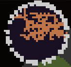

Subregions
Each region can optionally have the subregions field, which is a list of other regions, each with its own unique ident as well as other fields.
Note that the radius and position fields of each subregion is relative to the parent region.
{
ident=98
color=0x5555AA
faction=98
count=3
position={0.70,0.80}
radius= {0.05,0.10}
subregions={ -- Ensure that each subregion has a unique ident.
{
ident=980
color=0x8888AA
faction=98
count=1
position=0.70
radius= 0.30
-- Other fields here.
}
{
ident=981
color=0xAAAA55
faction=98
count=3
position=0.2
radius= 0.1
-- Other fields here.
}
{
ident=982
color=0x333388
faction=98
count=3
position={0.00,1.00}
radius= {0.20,0.30}
-- Other fields here.
}
}
}
Subregions can even contain other subregions, creating a region tree.
-- Many fields excluded.
{
ident=980
faction=98
subregions={
{
ident=981
faction=98
}
{
ident=982
faction=98
subregions={
{
ident=983
faction=98
}
{
ident=984
faction=98
}
}
}
}
}
Example of a Unique Region
The Makai & Monolith Orbital Runeworks mod uses nested subregions well by imitating the shape of its rune blocks with regions of different shapes.
(Fields that do not affect region map appearance have been removed.)
{
-- Deep Blue Background:
ident=2671
color=0x1E142B
faction=267
count=4
type=2
position={0.9,1.0}
radius= {0.2,0.2}
subregions = {
-- Inner Light Orange Splats:
{
ident=2672
color=0xEE915B
faction=267
count=2
type=1
position={0.2,0.6}
radius= {0.2,0.3}
}
{
-- White Outer Rim:
ident=2673
color=0xFFFFFF
faction=267
count=40
type=2
position={1.0,1.0}
radius= {0.1,0.1}
}
}
}
